대기환경산업기사 (2019-09-21 기출문제)
1과목: 대기오염개론
1. Panofsky에 따른 Richardson수(Ri)의 크기와 대기의 혼합 간의 관계로 옳지 않은 것은?
- Richardson수가 0에 접근하면 분산은 줄어든다.
- 0.25＜Ri: 수직방향의 혼합은 없다.
- Ri가 0.2보다 크게 되면 수직혼합이 최대가 되고, 수평혼합은 없다.
- Ri=0: 기계적 난류만 존재한다.
(정답률: 71%)

2. 굴뚝 직경 2m, 굴뚝 배출가스 속도 5m/s, 굴뚝 배출가스 온도 400Km, 대기온도 300K, 풍속3m/s일 때 연기 상승높이(m)는? (단,
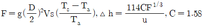
)- 142.6m
- 152.3m
- 168.5m
- 198.2m
(정답률: 65%)
3. 로스엔젤레스 스모그 사건에서 시간에 따른 광화학 스모그 구성 성분변화 추이 중 가장 늦은 시간에 하루 중 최고치를 나타내는 물질은?
- NO2
- 알데하이드
- 탄화수소
- NO
(정답률: 66%)
4. 대기오염사건과 관련된 설명 중 ()안에 가장 알맞은 것은?
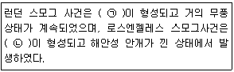
- ㉠ 복사역전 ㉡ 이류성역전
- ㉠ 이류성역전 ㉡ 침강역전
- ㉠ 침강역전 ㉡ 복사역전
- ㉠ 복사역전 ㉡ 침강역전
(정답률: 86%)
5. 다음 오염물질 중 수산기을 포함하는 것은?
- chloroform
- benzene
- methyl mercaptan
- phenol
(정답률: 77%)
6. 연기의 배출속도 50m/s, 평균풍속 300m/min, 유효굴뚝높이 55m, 실제굴뚝높이 24m인 경우 굴뚝의 직경(m)은? (단, △H=1.5×(VS/U)×D식 적용)
- 0.3
- 1.6
- 2.1
- 3.7
(정답률: 59%)
7. 다음 중 “무색의 기체로 자극성이 강하며, 물에 잘 녹고, 살균 방부제로도 이용되고, 단열재, 피혁 제조, 합성수지 제조 등에서 발생하며, 실내공기를 오염시키는 물질”에 해당하는 것은?
- HCHO
- C6H5OH
- HCI
- NH3
(정답률: 78%)
8. 분자량이 M인 대기오염 물질의 농도가 표준상태(0℃, 1기압)에서 448ppm으로 측정되었다. 표준상태에서 mg/m3로 환산하면?
- 1/20M
- M/20
- 20M
- 20/M
(정답률: 81%)
9. 다음 중 2차 오염물질로 볼 수 없는 것은?
- 이산화황이 대기중에서 산화하여 생성된 삼산화황
- 이산화질소의 광화학반응에 의하여 생성된 일산화질소
- 질소산화물의 광화학반응에 의한 원자상 산소와 대기중의 산소가 결합하여 생성된 오존
- 석유정제시 수소첨가에 의하여 생성된 황화수소
(정답률: 80%)
10. 오존층 보호를 위한 오존층 파괴물질의 생산 및 소비감축에 관한 내용의 국제협약으로 가장 적절한 것은?
- 바젤협약
- 리우선언
- 그린피스협약
- 몬트리올 의정서
(정답률: 88%)
11. 교토의정서의 2020년까지의 연장 및 한국의 녹색기후기금(GCF) 유치를 인준한 당사국회의 개최장소는?
- 모로코 마라케쉬
- 케냐 나이로비
- 멕시코 칸쿤
- 카타르 도하
(정답률: 78%)
12. 지구상에 분포하는 오존에 관한 설명으로 옳지 않은 것은?
- 오존량은 돕슨(Dobson) 단위로 나타내는데, 1Dobson은 지구 대기중 오존의 총량을 0℃, 1기압의 표준상태에서 두께로 환산하였을 때 0.01cm에 상당하는 양이다.
- 오존층 파괴로 인해 피부암, 백내장, 결막염 등 질변유발과, 인간의 면역기능의 저하를 유발할 수 있다.
- 오존의 생성 및 분해반응에 의해 자연상태의 성층권 영역에는 일정 수준의 오존량이 평형을 이루게 되고, 다른 대기권 영역에 비해 오존의 농도가 높은 오존층이 생성된다.
- 지구 전체의 평균오존전량은 약 300 Dobson 이지만, 지리적 또는 계절적으로 그 평균값이 ±50% 정도까지 변화하고 있다.
(정답률: 87%)
13. 수은에 관한 설명으로 옳지 않은 것은?
- 원자량 200.61m, 비중 6.92이며, 염산에 용해된다.
- 만성중독의 경우 전형적인 등상은 특수한 구내염, 눈, 입술, 혀, 손발 등이 빠르고 엷게 떨린다.
- 만성중독의 경우 손과 팔의 근력이 저하되며, 다발성 신경염도 일어난다고도 보고된다.
- 일본의 미나마따지방에서 발생한 미나마따병은 유기수은으로 인한 공해병이며, 구심성 시야흡착, 난청, 언어장해 등이 나타난다.
(정답률: 78%)
14. 일반적으로 냄새의 강도와 농도 사이에 성립하는 법칙으로 가장 적합한 것은?
- Nernst-Planck의 법칙
- Weber Fechner의 법칙
- Albedo의 법칙
- Wien의 법칙
(정답률: 75%)
15. 다음 대기오염물질 중 혈관내 용혈을 일으키며, 3대 증상으로는 복통, 황달, 빈뇨이며, 급성중독일 경우 활성탄과 하제를 투여하고 구토를 유발시켜야 하는 것은?
- Asbestos
- Arsenic(As)
- Benzo[a]pyrene
- Bromine(Br)
(정답률: 79%)
16. 먼지농도가 160μg/m3이고, 상대습도가 70%인 상태의 대도시에서의 가시거리는 몇 km인가? (단, A=1.2)
- 4.2km
- 5.8km
- 7.5km
- 11.2km
(정답률: 65%)
17. 다음 대기오염물질 중 비중이 가장 큰 것은?
- 포름알데히드
- 이황화탄소
- 일산화질소
- 이산화질소
(정답률: 78%)
18. 다음 그림에서 “가”쪽으로 부는 바람은?
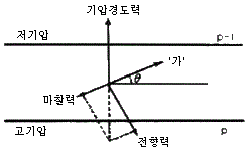
- geostropic wind
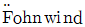
- surface wind
- gradient wind
(정답률: 79%)
19. 다음 대기분산모델 중 벨기에에서 개발되었으며, 통계모델로서 도시지역의 오존농도를 계산하는데 이용했던 것은?
- ADMS(atmospheric dispersion ozone model system)
- OCD(offshore and coastal ozone dispersion model)
- SMOGSTOP(statistical model of groundlevel short term ozone pollution)
- RAMS(regional atmospheric ozone model system)
(정답률: 75%)
20. 통상적으로 대기오염물질의 농도와 혼합고간의 관계로 가장 적합한 것은?
- 혼합고에 비례한다.
- 혼합고의 2승에 비례한다.
- 혼합고의 3승에 비례한다.
- 혼합고의 3승에 반비례한다.
(정답률: 64%)
2과목: 대기오염 공정시험 기준(방법)
21. 굴뚝반경이 2.2m인 원형 굴뚝에서 먼지를 채취하고자 할 때 측정점수는?
- 8
- 12
- 16
- 20
(정답률: 75%)
22. 굴뚝 배출가스 중 황화수소(H2S)를 자외선/가시선분광법(메틸렌블루법)으로 측정했을 때 농도범위가 5~100ppm일 때 시료채취량 범위로 가장 적합한 것은?
- 10~100mL
- 0.1~1L
- 1~10L
- 50~100L
(정답률: 63%)
23. 기체크로마토그래피에 관한 설명으로 옳지 않은 것은?
- 일정유량으로 유지되는 운반가스(carrier gas)는 시료도입부로부터 분리관내를 흘러서 검출기를 통하여 외부로 방출된다.
- 시료의 각 성분이 분리되는 것은 분리관을 통과하는 성분의 흡광성에 의한 속도변화 차이 때문이다.
- 일반적으로 무기물 또는 유기물의 대기오염물질에 대한 정성, 정량 분석에 이용된다.
- 기체시료 또는 기화한 액체나 고체시료를 운반가스(carrier gas)에 의하여 분리, 관내에 전개시켜 기체상태에서 분리되는 각 성분을 크로마토그래피적으로 분석하는 방법이다.
(정답률: 57%)
24. 분석대상가스가 질소산화물인 경우 흡수액으로 가장 적합한 것은? (단, 페놀디설폰산법 기준)
- 황산+과산화수소+증류수
- 수산화소듐(0.5%)용액
- 아연아민착염용액
- 아세틸아세톤함유흡수액
(정답률: 81%)
25. 0.1N H2SO4 용액 1000mL를 제조하기 위해서는 95% H2SO4를 약 몇 mL 취하여야 하는가? (단, H2SO4의 비중은 1.84)
- 약 1.2mL
- 약 3mL
- 약 4.8mL
- 약 6mL
(정답률: 49%)
26. 500 mmH2O는 약 몇 mmHg인가?
- 19mmHg
- 28mmHg
- 37mmHg
- 45mmHg
(정답률: 73%)
27. 환경대기 중 아황산가스의 농도를 산정량수동법으로 특정하여 다음과 같은 결과를 얻었다. 이 때 아황산가스의 농도는?
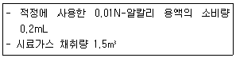
- 43 μg/m3
- 58 μg/m3
- 65 μg/m3
- 72 μg/m3
(정답률: 47%)
28. 대기오염공정시험기준 중 원자흡수분광광도법에서 사용되는 용어의 정의로 옳지 않은 것은?
- 슬롯버너:가스의 분출구가 세극상으로 된 버너
- 충전가스:중공음극램프에 채우는 가스
- 선프로파일:파장에 대한 스펙트럼선의 강도를 나타내는 곡선
- 근접선:목적하는 스펙트럼선과 동일한 파장을 갖는 같은 스펙트럼선
(정답률: 61%)
29. 자외선가시선분광법에 관한 설명으로 옳지 않은 것은? (단, Io:입사광도의 강도, It:투사광의 강도, C:용액의 농도, ℓ:빛의 투사길이, ε:비례상수(흡광계수))
- 램버어트 비어의 법칙을 응용한 것이다.
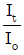
= 투과도라 한다.- 투과도
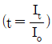
를 백분율로 표시한 것을 투과 퍼센트라 한다. - 투과도
 의 자연대수를 흡광도라 한다.
의 자연대수를 흡광도라 한다.
(정답률: 74%)
30. 원자흡수분광광도법으로 배출가스 중 Zn을 분석할 때의 측정파장으로 적합한 것은?
- 213.8nm
- 248.3nm
- 324.8nm
- 357.9nm
(정답률: 46%)
31. 시험의 기재 및 용어에 대한 정의로 옳지 않은 것은?
- 용액의 액성표시는 따로 규정이 없는 한 유리전극법에 의한 pH미터로 측정한 것을 뜻한다.
- 액체성분의 양을 정확히 취한다 함은 홀피펫, 눈금플라스크 또는 이와 동등 이상의 정도를 갖는 용량계를 사용하여 조작하는 것을 뜻한다.
- 항량이 될 때까지 건조한다 함은 따로 규정이 없는 한 보통의 건조방법으로 1시간 더 건조할 때 전후 무게의 차가 매 g당 0.5mg이하일 때를 뜻한다.
- 바탕시험을 하여 보정한다 함은 시료에 대한 처리 및 측정을 할 때 시료를 사용하지 않고 같은 방법으로 조작한 측정치를 빼는 것을 뜻한다.
(정답률: 75%)
32. 다음 중 특정 발생원에서 일정한 굴뚝을 거치지 않고 외부로 비산 배출되는 먼지를 고용량공기시료채취법으로 측정하여 농도계산 시 “전 시료채취 기간 중 주 풍량이 45°~90°변할 때”의 풍량 보정계수로 옳은 것은?
- 1.0
- 1.2
- 1.5
- 1.8
(정답률: 71%)
33. 황산 25mL를 물로 희석하여 전량을 1L로 만들었다. 희석 후 황산용액의 농도는? (단, 황산순도는 95%, 비중은 1.84이다.)
- 약 0.3N
- 약 0.6N
- 약 0.9N
- 약 1.5N
(정답률: 53%)
34. 환경대기 내의 옥시던트(오존으로서) 측정방법 중 알칼리성 요오드화 칼륨법에 관한 설명으로 가장 거리가 먼 것은?
- 대기 중에 존재하는 저농도의 옥시던트(오존)를 측정하는데 사용된다.
- 이 방법에 의한 오존 검출한계는 0.1~65μg이며, 더 높은 농도의 시료는 중성 요오드화 칼륨법으로 측정한다.
- 대기 중에 존재하는 미량의 옥시던트를 알칼리성 요오드화 칼륨용액에 흡수시키고 초산으로 pH3.8의 산성으로 하면 산화제의 당량에 해당하는 요오드가 유리된다.
- 유리된 요오드를 파장 352nm에서 흡광도를 측정하여 정량한다.
(정답률: 48%)
35. 굴뚝 배출가스 내 휘발성유기화합물질(VOCs)시료채취방법 중 흡착관법의 시료채취장치에 관한 설명으로 가장 거리가 먼 것은?
- 채취관 재질은 유리, 석영, 불소수지 등으로, 120℃ 이상까지 가열이 가능한 것이어야 한다.
- 시료채취관에서 응축기 및 기타부분의 연결관은 가능한 짧게 하고, 불소수지 재질의 것을 사용한다.
- 밸브는 스테인레스 재질로 밀봉윤활유를 사용하여 기체의 누출이 없는 구조이어야 한다.
- 응축기 및 응축수 트랩은 유리재질이어야 하며, 응축기는 기체가 앞쪽 흡착관을 통과하기 전 기체를 20℃ 이하로 낮출 수 있는 부피이어야 한다.
(정답률: 62%)
36. 굴뚝 배출가스 중 아황산가스를 연속적으로 분석하기 위한 시험방법에 사용되는 정전위전해분석계의 구성에 관한 설명으로 옳지 않은 것은?
- 가스투과성격막은 전해셀 안에 들어 있는 전해질의 유출이나 증발을 막고 가스투과성 성질을 이용하여 간섭성분의 영향을 저감시킬 목적으로 사용하는 폴리에틸렌 고분자격막이다.
- 작업전극은 전해셀 안에서 산화전극과 한쌍으로 전기회로를 이루며 아황산가스를 정전위전해 하는데 필요한 산화전극을 대전극에 가할 때 기준으로 삼는 전극으로서 백금전극, 니켈 또는 니켈화합물전극, 납 또는 납화합물전극 등이 사용된다.
- 전해액은 가스투과성 격막을 통과한 가스를 흡수하기 위한 용액으로 약 0.5M 황산용액으로 사용한다.
- 져전위전원은 작업전극에 일정한 전위의 전기에너지를 부가하기 위한 직류전원으로 수은전지가 있다.
(정답률: 59%)
37. 굴뚝 배출가스 중 페놀화합물을 자외선/가시선분광법으로 측정할 때 시료액에 4- 아미노안티피린용액과 헥사사이아노철(Ⅲ)산포타슘 용액을 가한 경우 발색된 색은?
- 황색
- 황록색
- 적색
- 청색
(정답률: 75%)
38. 대기오염공정시험기준에서 정의하는 기밀용기(機密容器)에 관한 설명으로 옳은 것은?
- 물질을 취급 또는 보관하는 동안에 이물이 들어가거나 내용물이 손실되지 않도록 보호하는 용기
- 물질을 취급 또는 보관하는 동안에 외부로부터의 공기 또는 다른 가스가 침입하지 않도로 ㄱ내용물을 보호하는 용기
- 물질을 취급 또는 보관하는 동안에 내용물이 광화학적변화를 일으키지 않도록 보호하는 용기
- 물질을 취급 또는 보관하는 동안에 기체 또는 미생물이 침입하지 않도록 내용물을 보호하는 용기
(정답률: 76%)
39. 외부로 비산 배출되는 먼지를 고용량공기시료채취법으로 측정한 조건이 다음과 같을 때 비산먼지의 농도는?
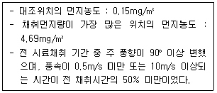
- 4.54mg/m3
- 5.45mg/m3
- 6.81mg/m3
- 8.17mg/m3
(정답률: 48%)
40. 굴뚝 배출가스 중 아황화탄소를 자외선/가시선 분광법으로 측정 시 분석파장으로 가장 적합한 것은?
- 560nm
- 490nm
- 435nm
- 235nm
(정답률: 53%)
3과목: 대기오염방지기술
41. 관성충돌, 확산, 증습, 응집, 부착원리를 이용하여 먼지입자와 유해가스를 동시에 제거할 수 있는 장점을 지닌 집진장치로 가장 적합한 것은?
- 음파집진장치
- 중력집진장치
- 전기집진장치
- 세정집진장치
(정답률: 81%)
42. 다음 석탄의 특성에 관한 설명으로 옳은 것은?
- 고정탄소의 함량이 큰 연료는 발열량이 높다.
- 회분이 많은 연료는 발열량이 높다.
- 탄화도가 높을수록 착화온도는 낮아진다.
- 휘발분 함량과 매연발생량은 무관하다.
(정답률: 57%)
43. 유압식과 공기분무식을 합한 것으로서 유압은 보통 7kg/cm2이상이며, 연소가 양호하고, 소형이며, 전자동 연소가 가능한 연소장치는?
- 증기분무식버너
- 방사형버너
- 건타입버너
- 저압기류분무식버너
(정답률: 65%)
44. 싸이클론과 전기집진장치를 순서대로 직렬로 연결한 어느 집진장치에서 포집되는 먼지량이 각각 300kg/h, 195kg/h이고, 최종 배출구로부터 유출되는 먼지량이 5kg/h이면 이 집진장치의 총집진효율은? (단, 기타조건은 동일하며, 처리과정 중 소실되는 먼지는 없다.)
- 98.5%
- 99.0%
- 99.5%
- 99.9%
(정답률: 50%)
45. 기체연료의 연소방식 중 확산연소에 관한 설명으로 옳지 않은 것은?
- 확산연소 시 연료류와 공기류의 경계에서 확산과 혼합이 일어난다.
- 연소 가능한 혼합비가 먼저 형성된 곳부터 연소가 시작되므로 연소형태는 연소기의 위치에 따라 달라진다.
- 화염이 길고 그을음이 발생하기 쉽다.
- 역화의 위험이 있으며 가스와 공기를 예열할 수 없는 단점이 있다.
(정답률: 62%)
46. 불화수소를 함유하는 배기가스를 충전 흡수탑을 이용하여 흡수율 92.5%로 기대하고 처리하고자 한다. 기상총괄이동단위높이(HOG)가 0.44일 때 이론적인 충전탑의 높이는? (단, 흡수액상 불화수소의 평형분압은 0이다.)
- 0.91m
- 1.14m
- 1.41m
- 1.63m
(정답률: 59%)
47. Propane gas 1 Sm3을 공기비 1.21로 완전연소 시켰을 때 생성되는 건조 배출가스량은? (단, 표준상태 기준)
- 26.8 Sm3
- 24.2 Sm3
- 22.3 Sm3
- 20.8 Sm3
(정답률: 44%)
48. 유해가스와 물이 일정온도 하에서 평형상태를 이루고 있을 때, 가스의 분압이 60mmHg, 물중의 가스농도가 2.4kgㆍmoL/m3이면, 이 때 헨리정수는? (단, 전압은 1기압, 헨리정수의 단위는 atmㆍm3/kgㆍmoL이다.)
- 0.014
- 0.023
- 0.033
- 0.417
(정답률: 58%)
49. 적정조건에서 전기집진장치의 분리속도(이동속도)는 커닝햄(stokes Cunningham)보정계수 Km에 비례한다. 다음 중 Km이 커지는 조건으로 알맞게 짝지은 것은? (단, Km≥1)
- 먼지의 입자가 작을수록, 가스압력이 낮을수록
- 먼지의 입자가 작을수록, 가스압력이 높을수록
- 먼지의 입자가 클수록, 가스압력이 낮을수록
- 먼지의 입자가 클수록, 가스압력이 높을수록
(정답률: 67%)
50. 다음 연료 중 검댕의 발생이 가장 적은 것은?
- 저휘발분 역청탄
- 코우크스
- 이탄
- 고휘발분 역청탄
(정답률: 69%)
51. 통풍에 관한 설명 중 옳지 않은 것은?
- 압입통풍은 역화의 위험성이 있다.
- 압입통풍은 로앞에 설치된 가압송풍기에 의해 연소용 공기를 연소로 안으로 압입하며, 내압은 정압(+)이다.
- 흡인통풍은 연소용 공기를 예열할 수 있다.
- 평형통풍은 2대의 송풍기를 설치, 운용하므로 설비비가 많이 소요되는 단점이 있다.
(정답률: 56%)
52. 공기가 과잉인 경우로 열손실이 많아지는 때의 등가비(ø) 상태는?
- ø=1
- ø＜1
- ø＞1
- ø=0
(정답률: 70%)
53. 다음 중 싸이크론 집진장치에서 50%의 효율로 집진되는 입자의 크기를 나타내는 것으로 가장 적합한 용어는?
- 임계입경
- 한계입경
- 절단입경
- 분배입경
(정답률: 74%)
54. 송풍기에 관한 설명으로 거리가 먼 것은?
- 원심력 송풍기 중 전향날개형은 송풍량이 적으나, 압력손실이 비교적 큰 공기조화용 및 특수 배기용 송풍기로 사용한다.
- 축류 송풍기는 축 방향으로 흘러 들어온 공기가 축 방향으로 흘러 나갈 때의 임펠러의 양력을 이용한 것이다.
- 원심력 송풍기 중 방사날개형은 자체 정화기능을 가지기 때문에 분진이 많은 작업장에 사용한다.
- 원심력 송풍기 중 후향날개형은 비교적 큰 압력손실에도 잘 견디기 때문에 공기정화장치가 있는 국소배기 시스템에 사용한다.
(정답률: 51%)
55. 다음 집진장치 중 통상적으로 압력손실이 가장 큰 것은?
- 충전탑
- 벤츄리 스크러버
- 사이클론
- 임펄스 스크러버
(정답률: 72%)
56. 후드를 포위식, 외부식, 레시버식으로 분류할 때, 다음 중 레시버식 후드에 해당하는 것은?
- Canopy type
- Cover type
- Glove box type
- Booth type
(정답률: 67%)
57. 연소 시 발생되는 질소산화물(NOx)의 발생을 감소시키는 방법으로 옳지 않은 것은?
- 2단 연소
- 연소부분 냉각
- 배기가스 재순환
- 높은 과잉공기 사용
(정답률: 79%)
58. 탄소 89%, 수소 11%로 된 경유 1kg을 공기과잉계수 1.2로 연소 시 탄소 2%가 그을음으로 된다면 실제 건조 연소가스 1Sm3 중 그을음의 농도(g/Sm3)는 약 얼마인가?
- 0.8
- 1.4
- 2.9
- 3.7
(정답률: 37%)
59. 다음 중 각종 발생원에서 배출되는 먼지입자의 진비중(S)과 겉보기 비중(SB)의 비(S/SB)가 가장 큰 것은?
- 시멘트킬른
- 카본블랙
- 골재건조기
- 미분탄보일러
(정답률: 78%)
60. VOC 제어를 위한 촉매소각에 관한 설명으로 가장 거리가 먼 것은?
- 촉매를 사용하여 연소실의 온도를 300~400℃정도로 낮출 수 있다.
- 고농도의 VOC 및 열용량이 높은 물질을 함유한 가스는 연소열을 낮춰 촉매활성화를 촉진시키므로 유용하게 사용할 수 있다.
- 백금, 팔라듐 등이 촉매로 사용된다.
- Pb, As, P, Hg 등은 촉매의 활성을 저하시킨다.
(정답률: 51%)
4과목: 대기환경 관계 법규
61. 대기환경보전법규상 관제센터로 측정결과를 자동전송하지 않는 사업장 배출구의 자가측정횟수기준으로 옳은 것은? (단, 제1종 배출구이며, 기타 경우는 고려하지 않음)
- 매주 1회 이상
- 매월 2회 이상
- 2개월 마다 1회 이상
- 반기마다 1회 이상
(정답률: 68%)
62. 다음은 대기환경보전법상 과징금 처분에 관한 사항이다 ()안에 가장 적합한 것은?
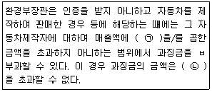
- ㉠ 100분의 3, ㉡ 100억원
- ㉠ 100분의 3, ㉡ 500억원
- ㉠ 100분의 5, ㉡ 100억원
- ㉠ 100분의 5, ㉡ 500억원
(정답률: 65%)
63. 다음은 대기환경보전법규상 비산먼지 발생을 억제하기 위한 시설의 설치 및 필요한 조치에 관한 기준이다. ()안에 알맞은 것은?
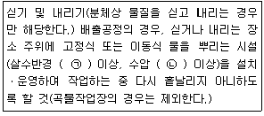
- ㉠ 3m, ㉡ 1.5kg/cm2
- ㉠ 3m, ㉡ 3kg/cm2
- ㉠ 5m, ㉡ 1.5kg/cm2
- ㉠ 5m, ㉡ 3kg/cm2
(정답률: 68%)
64. 다음은 대기환경보전법령상 변경신고에 따른 가동개시신고의 대상규모기준에 관한 사항이다. ()안에 알맞은 것은?
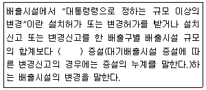
- 100분의 10 이상
- 100분의 20 이상
- 100분의 30 이상
- 100분의 50 이상
(정답률: 55%)
65. 대기환경보전법규상 개선명령과 관련하여 이행상태 확인을 위해 대기오염도 검사가 필요한 경우 환경부령으로 정하는 대기오염도 검사기관과 거리가 먼 것은?
- 유역환경청
- 환경보전협회
- 한국환경공단
- 시ㆍ도의 보건환경연구원
(정답률: 77%)
66. 대기환경보전법규상 대기환경규제지역 지정시 상시 측정을 하지 않는 지역은 대기오염도가 환경기준의 얼마 이상인 지역을 지정하는가?(오류 신고가 접수된 문제입니다. 반드시 정답과 해설을 확인하시기 바랍니다.)
- 50퍼센트 이상
- 60퍼센트 이상
- 70퍼센트 이상
- 80퍼센트 이상
(정답률: 62%)
67. 대기환경보전법상 저공해자동차로의 전환 또는 개조 명령, 배출가스저감장치의 부착ㆍ교체 명령 또는 배출가스 관련 부품의 교체 명령, 저공해엔진(혼소엔진을 포함한다)으로의 개조 또는 교체 명령을 이행하지 아니한 자에 대한 과태료 부과기준은?
- 1000만원 이하의 과태료
- 500만원 이하의 과태료
- 300만원 이하의 과태료
- 200만원 이하의 과태료
(정답률: 67%)
68. 대기환경보전법상 거짓으로 배출시설의 설치허가를 받은 후에 시ㆍ도지사가 명한 배출시설의 폐쇄명령까지 위반한 사업자에 대한 벌칙기준으로 옳은 것은?
- 7년 이하의 징역이나 1억원 이하의 벌금
- 5년 이하의 징역이나 3천만원 이하의 벌금
- 1년 이하의 징역이나 500만원 이하의 벌금
- 300만원 이하의 벌금
(정답률: 66%)
69. 대기환경보전법령상 초과부과금 산정기준에서 다음 오염물질 중 1킬로그램당 부과금액이 가장 적은 것은?
- 염화수소
- 사안화수소
- 불소화물
- 황화수소
(정답률: 63%)
70. 다음은 대기환경보전법상 장거리이동 대기오염물질대책위원회에 관한 사항이다. ()안에 알맞은 것은?
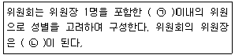
- ㉠ 25명, ㉡ 환경부장관
- ㉠ 25명, ㉡ 환경부차관
- ㉠ 50명, ㉡ 환경부장관
- ㉠ 50명, ㉡ 환경부차관
(정답률: 70%)
71. 실내공기질 관리법규상 실내공기 오염물질에 해당하지 않는 것은?
- 아황산가스
- 일산화탄소
- 폼알데하이드
- 이산화탄소
(정답률: 56%)
72. 대기환경보전법규상 위임업무의 보고사항 중 ‘수입자동차 배출가스 인증 및 검사현황’의 보고 힉수 기준으로 적합한 것은?
- 연 1회
- 연 2회
- 연 4회
- 연 12회
(정답률: 58%)
73. 실내공기질 관리법령상 이법의 적용대상이 되는 다중이용시설로서 “대통령령으로 정하는 규모의 것”의 기준으로 옳지 않은 것은?
- 공항시설 중 연면적 1천5백제곱미터 이상인 여객터미널
- 연면적 2천제곱미터 이상인 실내주차장(기계식 주차장은 제외한다.)
- 철도역사의 연면적 1천5백제곱미터 이상인 대합실
- 항만시설 중 연면적 5천제곱미터 이상인 대합실
(정답률: 63%)
74. 환경정책기본법령상 오존(O3)의 대기환경기준으로 옳은 것은? (단, 1시간 평균치)
- 0.03 ppm 이하
- 0.⑤ ppm 이하
- 0.1 ppm 이하
- 0.15 ppm 이하
(정답률: 59%)
75. 대기환경보전법령상 규모별 사업장의 구분 기준으로 옳은 것은?
- 1종사업장-대기오염물질발생량의 합계가 연간 70톤 이상인 사업장
- 2종사업장-대기오염물질발생량의 합계가 연간 20톤 이상 80톤 미만인 사업장
- 3종사업장-대기오염물질발생량의 합계가 연간 10톤 이상 30톤 미만인 사업장
- 4종사업장-대기오염물질발생량의 합계가 연간 1톤 이상 10톤 미만인 사업장
(정답률: 75%)
76. 대기환경보전법규상 휘발유를 연료로 사용하는 소형 승용차의 배출가스 보증기간 적용기준은? (단, 2016년 1월 1일 이후 제작자동차)
- 2년 또는 160,000km
- 5년 또는 150,000km
- 10년 192,000km
- 15년 또는 240,000km
(정답률: 48%)
77. 대기환경보전법령상 배출시설 설치허가를 받거나 설치신고를 하려는 자가 시ㆍ도지사 등에게 제출할 배출시설 설치허가신청서 또는 배출시설 설치신고서에 첨부하여야 할 서류가 아닌 것은?
- 배출시설 및 방지시설의 설치명세서
- 방지시설의 일반도
- 방지시설의 연간 유지관리계획서
- 환경기술인 임명일
(정답률: 71%)
78. 다음은 대기환경보전법규상 주유소 주유시설의 휘발성유기화합물 배출 억제ㆍ방지시설 설치 및 검사ㆍ측정결과의 기록보존에 관한 기준이다. ()안에 알맞은 것은?
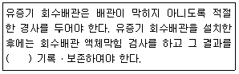
- 1년간
- 2년간
- 3년간
- 5년간
(정답률: 45%)
79. 대기환경보전법규상 비산먼지 발생을 억제하기 위한 시설의 설치 및 필요한 조치에 관한 기준 중 “야외 녹 제거 배출공정” 기준으로 옳지 않은 것은?
- 야외 작업 시 이동식 집진시설을 설치할 것. 다만, 이동식 집진시설의 설치가 불가능할 경우 진공식 청소차량 등으로 작업현정에 대한 청소작업을 지속적으로 할 것
- 풍속이 평균초속 8m 이상(강선건조업과 합섣수지선 건조업이 경우에는 10m 이상)인 경우에는 작업을 중지할 것
- 야외 작업 시에는 간이칸막이 등을 설치하여 먼지가 흩날리지 아니하도록 할 것
- 구조물의 길이가 30m 미만인 경우에는 옥내작업을 할 것
(정답률: 70%)
80. 다음은 대기환경보전법규상 배출시설별 배출원과 배출량 조사에 관한 사항이다. ()안에 알맞은 것은?
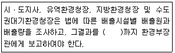
- 다음해 1월말
- 다음해 3월말
- 다음해 6월말
- 다음해 12월31일
(정답률: 56%)